Comment peut-on récupérer les énergies de nos actions de tous les jours ?
Introduction
L’énergie est de de plus en plus prisée au fur et à mesure que la population humaine augmente. Elle est la source du mouvement et l’homme en a besoin pour vivre. Pour cela, il transforme différentes sources d’énergie en énergie électrique pour pouvoir ainsi contenter différents besoins. L’énergie électrique quant à elle possède la caractéristique de pouvoir être « déplacée » sur de longues distances de manière très rapide avec un bon rendement. Cependant, pour que l’électricité soit disponible de manière continue (prises électriques), des centrales électriques sont en fonctionnement perpétuel. Elle est ainsi produite en fonction de la consommation. Cette production a un coût au niveau environnemental : les déchets produits par les centrales (gaz à effet de serre, substances radioactives…). C’est pourquoi de de nouveaux modes de production durables sont apparus. Ils utilisent notamment les énergies naturellement présentes dans la nature (énergie solaire, géothermique, hydroélectrique…).
Dans ce TPE, nous avons décidé d’innover un nouveau mode de récupération d’énergie, qui possède la particularité de se baser sur des formes d’énergie que nous produisons mais qui ne sont pas utilisées ou bien gaspillées. Nous tenterons d’y répondre en réalisant une étude préalable du système, viendra ensuite l’élaboration d’un prototype qui réponde au besoin.
I. Conversions d’énergies
A. Comment définir une énergie ?
Le mot « énergie » vient du bas latin « energia » qui vient lui-même du grec « energeia » qui signifie force en action, par opposition à « dynamis » signifiant force en puissance.
L’énergie – en général – est un concept abstrait désignant une « force » permettant d’effectuer un travail. L’énergie peut être quantifiée grâce à une unité du système international, le Joule (J). A l’échelle quantique, cette énergie est définie par le mouvement des particules (électrons libres qui changent d’atomes, photons qui se déplacent). Une notion importante, que nous aborderons concrètement dans ce TPE, est la loi de la conservation de l'énergie dans des systèmes fermés. Brièvement, « elle énonce que le mouvement ne peut être créé et ne peut non plus être annulé : il peut seulement passer d'une forme à une autre. » c’est le Théorème de Noether. La loi de conservation de la matière quant à elle (« Rien ne se perd, rien ne créé, tout se transforme. ») d’Antoine Lavoisier est également valable pour l’énergie (malgré qu’elle soit plus générale) ; tous les phénomènes présents dans la nature résultent uniquement de transformations.
B. Caractériser la conversion d’une forme d’énergie
Il est possible de différencier différentes formes d’énergie. On peut citer notamment l’énergie électrique, l’énergie mécanique ou encore l’énergie rayonnante. Toutefois, ce classement reste très subjectif (l’énergie « hydraulique » est en réalité l’énergie cinétique de l’eau par exemple). Chacune de ces formes peut être converties en une autre forme d’énergie. Par exemple, la conversion de l’énergie thermique vers de l’énergie rayonnante n’est autre qu’une combustion. Ou encore l’énergie électrique vers l’énergie mécanique, un champ magnétique produit par un courant électrique.
Voici un graphique représentant les énergies ainsi que les conversions possibles qu’elles peuvent effectuer entre elles :
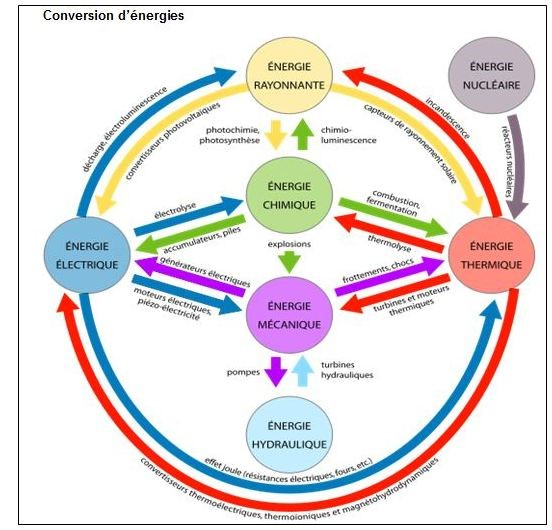
C. Où les retrouve-t-on ?
Dans notre univers, l’énergie est naturellement présente : elle ne se créé pas et ne se détruit pas. Si on pouvait quantifier l’énergie totale, cette somme resterait la même. Elle se transforme en permanance de manière naturelle cependant elle a tendance à se « désordonner » ; l’énergie cinétique se transforme en énergie thermique mais l’inverse est moins fréquent (une partie de l’énergie reste dans son état. Ce phénomène se nomme l’entropie.
Voici une simple équation définissant le rendement d’un système :
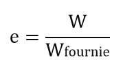
...Où W est la quantité d’énergie produite par le système, Wfournie, l’énergie nécessaire pour produire W d’énergie et e le rapport de la transformation de l’énergie. Il est strictement inférieur à 1 (un rendement de 1 existe uniquement dans la théorie…). Lors de cette transformation, l’énergie est convertie en frottements, échauffements… C’est l’entropie !
On peut dire que le marché de l’énergie fonctionne indirectement grâce à l’entropie (une partie l’énergie utilisée est tout le temps transformée en échauffements ce qui créé un besoin constant). De nos jours, nous nous servons de l’électricité en tant qu’énergie « primaire ». Il est très facile de la transporter sur de longues distances avec peu de pertes et ensuite elle peut être convertie en d’autres formes qui seront ensuite utilisées par les consommateurs.
II. Nouveaux concepts de récupération d’énergie
A. Energies du futur
De nos jours, l’appellation « d’énergies du futur » définit un mode de production d’énergie qui se fie le plus au concept de développement durable. Une énergie viable pour le futur est une énergie qui doit être peu polluante pour les générations futures, durable dans le temps et doit pouvoir satisfaire les besoins de tout le monde.
B. Piézo-électricité
Comment fonctionne une dynamo ?
Une dynamo est un système qui consiste à transformer l’énergie mécanique (rotation sur un axe) en énergie électrique (électricité). Cela grâce à un champ magnétique proche d’une bobine de cuivre. Le mouvement d’aller-retour de l’aimant créé ainsi un courant alternatif. Réciproquement, faire passer un courant électrique dans une bobine de cuivre génère un champ magnétique et donc transforme l’énergie électrique fournie en énergie mécanique (c’est le fonctionnement d’un moteur électrique).
Comment fonctionne un transducteur piézo-électrique ?
La piézo-électricité est une forme particulière de transformation d’énergie. L’étymologie du mot vient du Grec « piézein » qui signifie presser. On la trouve notamment dans des transducteurs piézos.
Dans les transducteurs piézo-électriques se trouvent des cristaux de quartz. Un cristal est un solide dont les constituants sont assemblés de manière régulière (on dit que sa structure est régulière). Lors d’une compression de ce cristal, sa structure en est déformée en fonction de la force exercée. Les électrons sont donc déplacés ce qui produit un courant électrique. Lorsque l’on relâche la pression, le cristal reprend sa forme initiale, ce qui créé un courant électrique de sens contraire, d’intensité beaucoup plus faible cependant.
Ce petit schéma illustre parfaitement la réaction d’un cristal à une pression. A gauche, l’état initial du cristal, sa structure est stable et sa forme est régulière. Les barycentres des charges sont alors confondus. A droite, le même cristal mais sous pression. Les barycentres des charges son alors différenciés et éloignés.
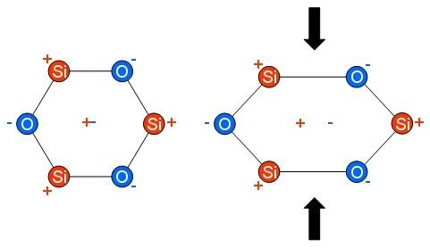
C. Les problèmes de déploiement
Une application d’un générateur piézo-électrique serait de la placer à l’intérieur d’une semelle de chaussure de randonnée ; lors des chocs avec le sol, la cellule piézo-électrique est compressée est génère un micro courant électrique. Il permettrait de produire suffisamment d’électricité qui pourrait être stockée dans une batterie pour alimenter une balise GPS. Cela permet d’assurer la sécurité du randonneur sans se soucier de recharger la batterie de la balise. Ce système a été imaginé par des chercheurs mais jamais mis en place ni commercialisé.
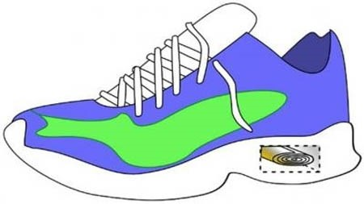
La société Arveni quant à elle a conçu une télécommande de télévision pour la marque Philips qui fonctionne sans piles. La simple pression d’une touche suffit à générer le courant nécessaire pour envoyer un signal infrarouge au récepteur.

Toulouse a également fait installer un dispositif sous une portion de trottoir qui permet de collecter l’énergie des vibrations émise par les piétons qui circulent. Une lampe est ensuite directement alimentée pour démontrer que de l’énergie a été générée.
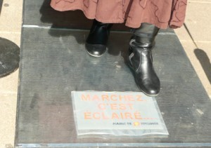
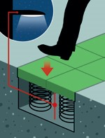
Malheureusement ces systèmes ne sont pas encore voués à un grand avenir étant donné que la quantité d’énergie produite est trop faible comparée au coût d’installation d’un tel dispositif ou bien de fabrication du produit.
III. Notre réalisation matérielle
A. La conception préalable
Pour pouvoir répondre à la problématique initiale de ce TPE, nous avons décidé de concevoir un prototype qui réponde au besoin. Nous avons commencé par établir le diagramme de la bête à corne :
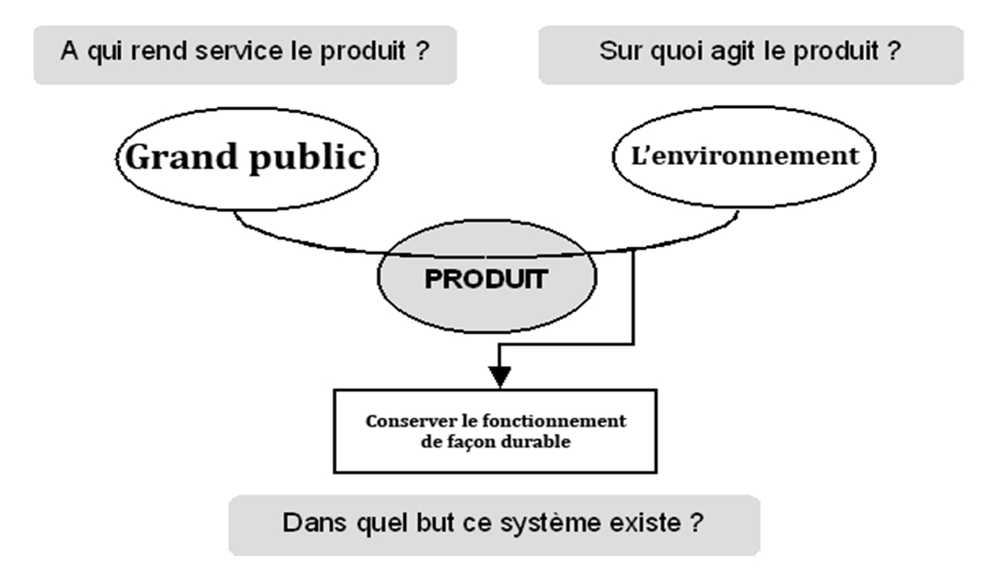
Nous avons ensuite dû choisir un des deux grands axes sur lequel nous allions porter notre étude.
• Transformer des énergies renouvelables naturellement présentes (énergie solaire, géothermique, éolienne)
• Récolter l’énergie non utilisée de notre quotidien (frein moteur, instruments de musculation, claviers mécaniques)
Nous avons choisi de nous pencher sur le second axe de recherche pour différentes raisons ; tout d’abord pour le côté innovant de la chose, en effet les recherches d’énergies renouvelables d’aujourd’hui se basent principalement sur des énergies naturellement présentes. Or ici ce sont des énergies induites par l’homme et qui ne sont pas récupérées et donc perdues.
Voici un petit récapitulatif d’exemples de sources d’énergies qui pourraient être exploitées et une des manières qui pourrait fonctionner :
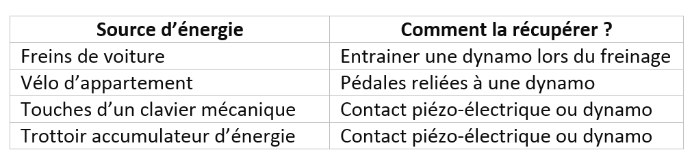
B. Quelles ont été les différentes contraintes ?
Nous avions tout d’abord essayé de récupérer l’énergie mécanique par le biais d’un moteur, en l’utilisant en tant que dynamo.
Il nous a ensuite fallut calculer la puissance électrique que générait ce moteur en effectuant une certaine rotation. Comment calculer la puissance fournie par une dynamo ?
On sait que la puissance est égale au produit de l’intensité et de la tension (
P = U x I)
Il faut donc mesurer l’intensité et la tension du courant qui sort de la dynamo. On installe donc une résistance faible (100ohm devrait suffire) qui fera office de récepteur. La tension se mesure en dérivation par rapport aux deux bornes de la résistance tandis que pour l’intensité il faut placer l’ampèremètre en série.
Nous avons ensuite utilisé un petit moteur lego qui a l’avantage de pouvoir effectuer une rotation avec peu de résistance (en contrepartie il produit moins d’électricité qu’un moteur avec une résistance plus importante !) pour permettre d’appuyer sur la touche facilement.
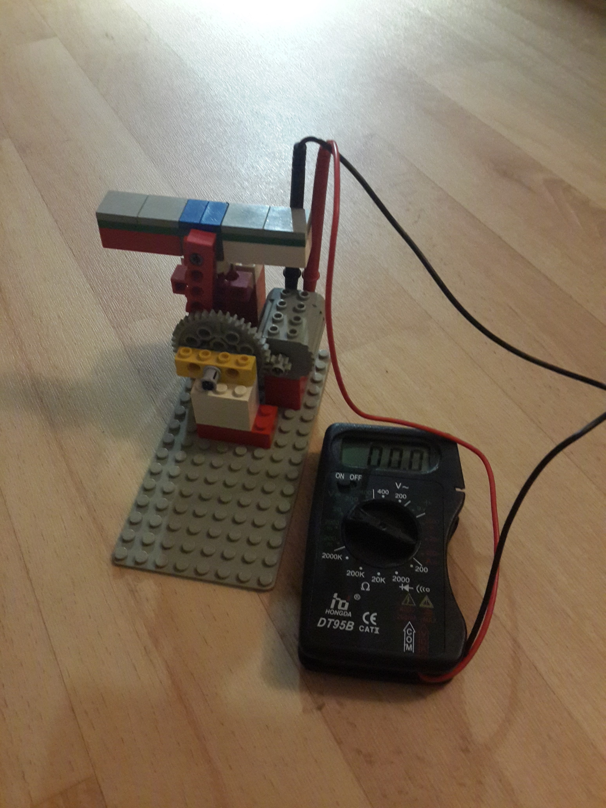
Nous avons simulé de petites rotations sur l’axe principal du moteur simulant ainsi l’appui sur la touche de clavier, tout en reliant le moteur au multimètre. Nous obtenons donc une tension de 1V pour une intensité de 15A, ce qui mène à une puissance de 15W.
Nous avons testé la maquette que nous avons construite à l’aide de briques lego. A cause du manque d’informations sur le matériel (puissance du moteur) et des instruments de mesure, le rapport énergie produite/énergie fournie ne pourra pas être calculé. Toutefois, nous nous doutions quand même qu’il serait faible à cause du mauvais glissement des pièces.
La dynamo est difficile à installer sur des systèmes générant des « chocs ». En effectuant des recherches et en questionnant des personnes qui sont dans ce domaine, nous avons découvert la piézo-électricité. C’est un matériau particulier, qui en étant compressé génère de l’électricité. On le trouve notamment dans les allumeurs de briquets. Les imprimantes à jet d’encre utilisent aussi un contacteur piézo-électrique pour faire couler des micros gouttes d’encre en l’alimentant avec une tension très faible. Nous nous en somme procuré un exemplaire commandé sur un site en ligne.
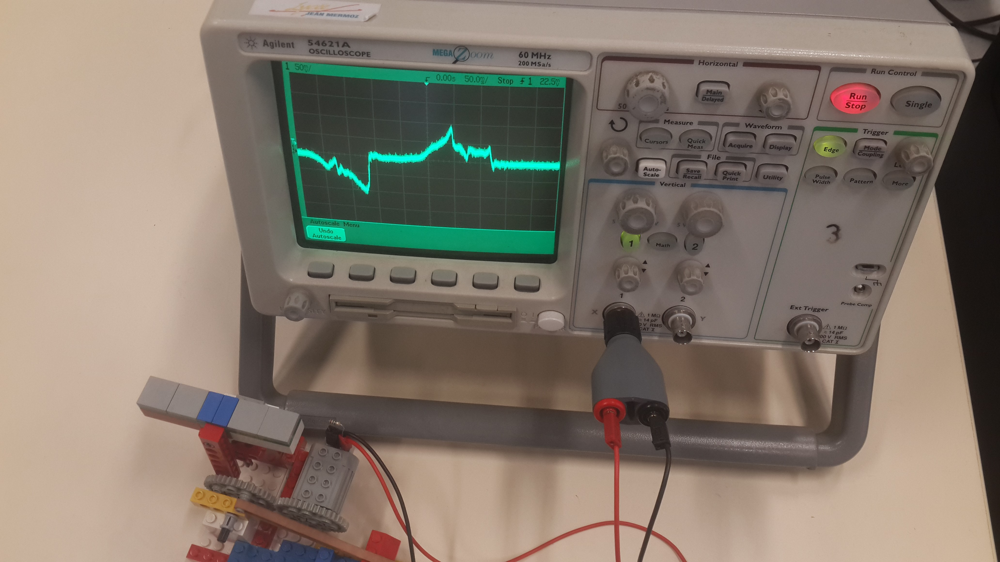
Sur cette fenêtre, un carreau en abscisse correspond à 50ms et un en ordonnée à 50mV. La courbe va de -200mV à 250mV, l’étendue est donc de 250 + 200 = 450mV. Une pression fournit un courant électrique pendant une durée de 50ms tandis que lorsque le bouton remonte, l’énergie est fournie pendant 100ms mais elle est moins importante.
Nous avions pensé à utiliser un allumeur de briquet créant de petites étincelles et fonctionnant par choc, comme ce que nous cherchions.
L’allumeur se trouve à l’intérieur des briquets à pression, ils permettent d’émettre une petite étincelle permettant de démarrer la combustion. A l’intérieur de ce dernier se trouve un micro contacteur piézo-électrique qui subit une pression très importante. Nous nous sommes penchés sur cette solution alternative qui semble correspondre à notre besoin.
Nous avons également mesuré la tension à l’aide d’un oscilloscope. L’allumeur émet lorsque l’on appuie dessus, une tension très importante, non mesurable avec cet oscilloscope qui peut mesurer une tension crête avoisinant les 1000V (pour une intensité très faible). Cette tension permet de créer un petit arc électrique (l’étincelle que l’on voit lorsqu’on appuie sur le bouton).
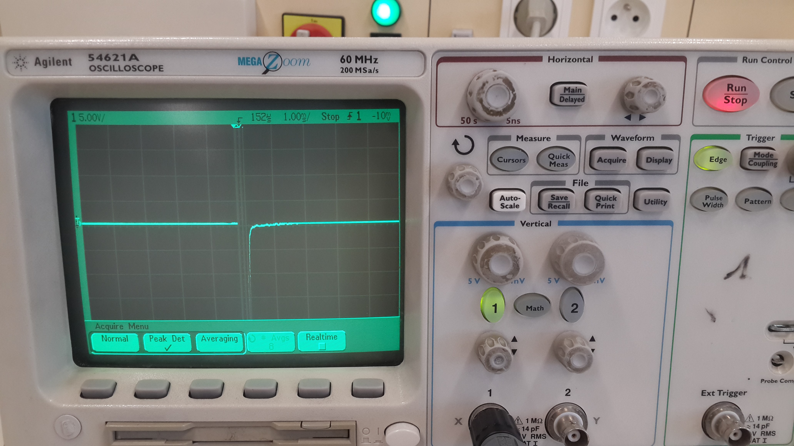
Malheureusement cela ne correspond pas à notre besoin puisque la tension est trop importante pour pouvoir être récupérée dans un condensateur ou une batterie.
Nous voulions mesurer la puissance électrique que le transducteur produisait. Les mesures depuis le multimètre furent compliquée à réaliser et très imprécises car le multimètre actualise les mesures qu’il affiche toutes les secondes. Or l’énergie produite ne dure qu’une demi-seconde au total ! Il a fallu trouver un moyen qui permettait d’actualiser plus rapidement ses résultats mais surtout de pouvoir observer un graphique où figure temps et tension. C’est tout ce qu'un oscilloscope permet de faire !

C. Les produits finaux
Le transducteur ne fonctionnait plus correctement, nous avons alors essayé avec un moteur qui faisait office de dynamo (remplaçant le transducteur). Pour pouvoir accumuler l’énergie, nous avons eu recourt à un condensateur de 6,3V de capacité maximale 3300µF récupéré sur une carte mère d’ordinateur. Nous avons tout d’abord réalisé un petit montage sur une breadboard qui comportait le moteur que nous faisions tourner manuellement, branché en parallèle au condensateur, ainsi qu’un voltmètre branché lui aussi en parallèle pour pouvoir mesurer la tension accumulée dans le condensateur après quelques rotations du moteur. Les résultats ne furent que peu concluants, seule la tension générée par une rotation du moteur faisait varier le voltmètre mais elle ne durait pas dans le temps. Nous avons compris bien plus tard que ce courant était en fait perdu dans le moteur (dès que le condensateur était chargé et que le moteur arrêtait sa rotation, tout le courant était quasiment instantanément injecté dans le moteur). Nous avons pensé à mettre un interrupteur poussoir sur lequel nous appuierons lorsque nous voulons charger le condensateur (document 1). Cela fonctionnait correctement mais le montage n’était pas pratique à utiliser. Enfin après une seconde réflexion, nous avons eu l’idée de brancher une diode en série à une des bornes du moteur, de telle sorte que le courant ne soit pas utilisé pour alimenter le moteur :
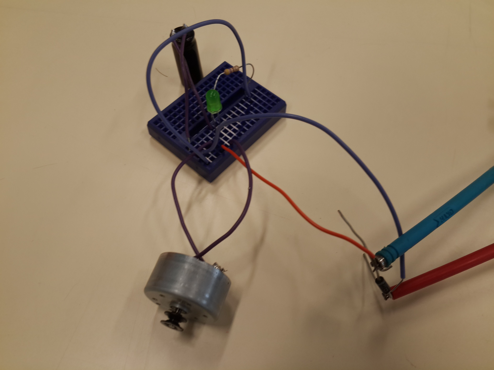
Pour tester le montage, il a fallu brancher une diode électro luminescente (DEL ou LED) et une résistance reliée à un bouton poussoir. Lorsque le condensateur est chargé, il suffit d’appuyer sur le bouton pour décharger le courant du condensateur dans la LED et ainsi l’éclairer pendant un très bref instant.
Nous avons ensuite remplacé le moteur par un transducteur piézo-électrique. Nous en avions acheté trois modèles différents pour les comparer :
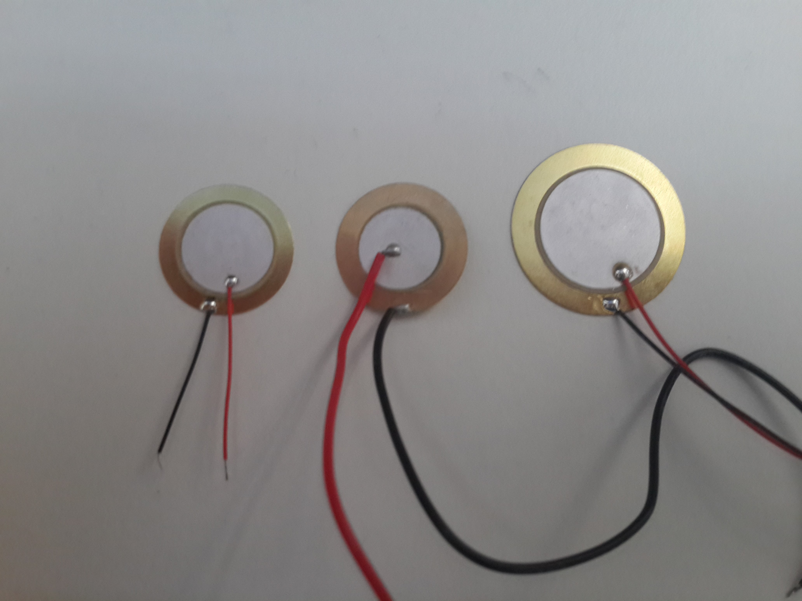
Le courant généré par un transducteur est plus ou moins proportionnel à la taille de la cellule de cristal (disque blanc) présente sur le transducteur. Nous avons choisi la cellule la plus grande pour produire le plus possible. Le montage est similaire à celui du moteur :
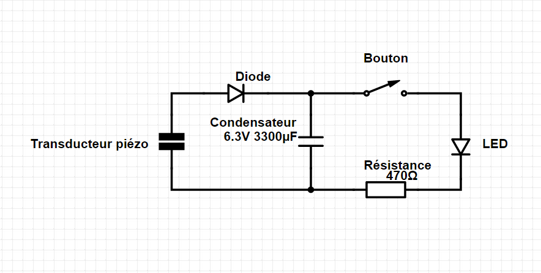
Et enfin voici le montage terminé :
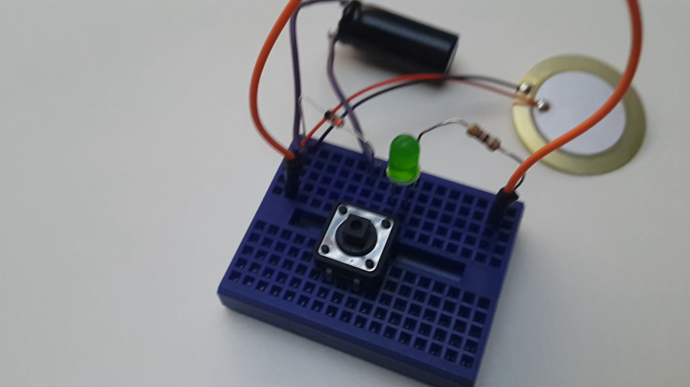
...et le système dans le clavier, ouvert :
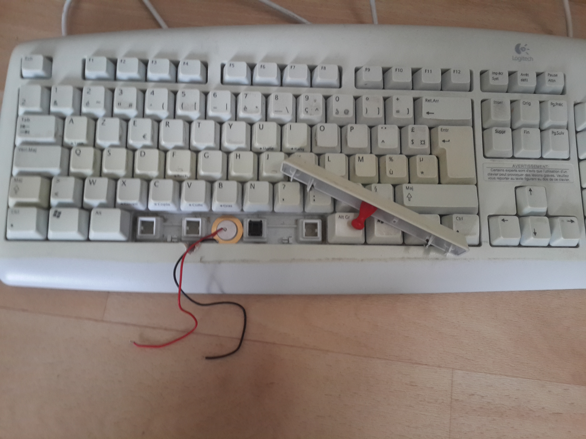
Nous avons ensuite pensé à stocker cette énergie. Nous avons pensé à utiliser des batteries rechargeables de téléphones portables, car de tension assez faible, 3,6V (équivalente à celle en sortie du transducteur). Les LED ont une tension nominale de 3V pour une intensité de 20mA. La puissance générée par le transducteur est trop faible pour pouvoir allumer en continu la LED ; c’est pour cela que l’énergie devra être stockée dans une batterie pour pouvoir ensuite être convertie en énergie électrique pour être utilisée.
Nous n'avions pas le matériel nécessaire pour réaliser cette amélioration, nous nous sommes contentés du condensateur.
Conclusion
Bilans personnels
Florian
Toby
Sitographie